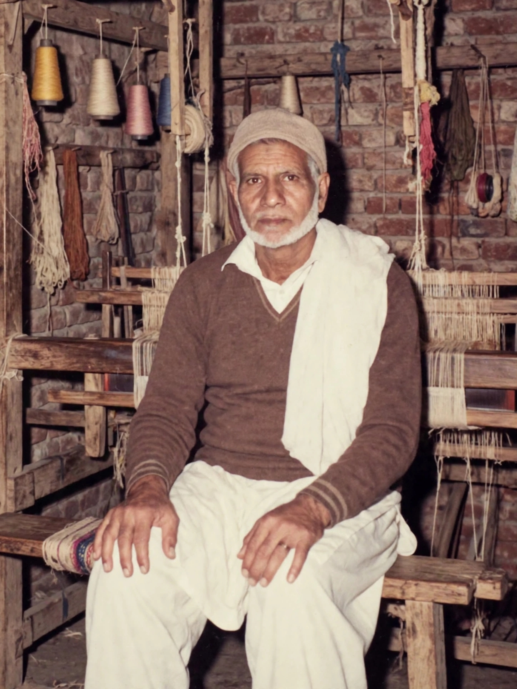
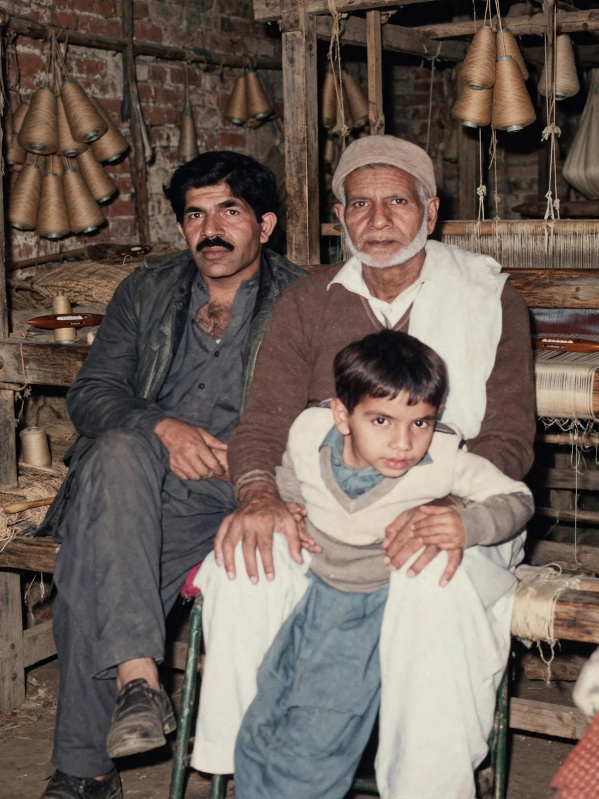
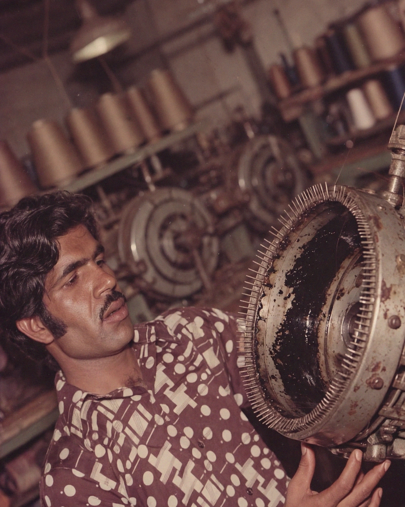
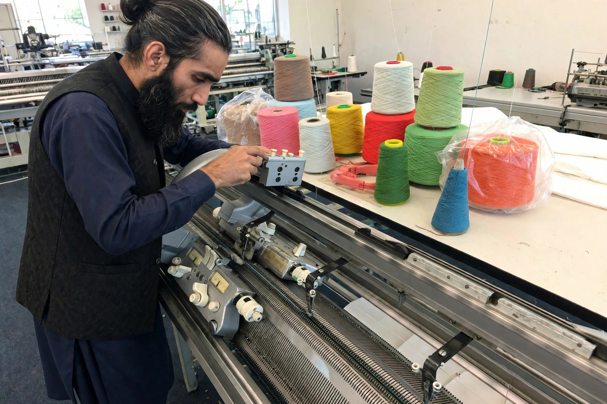

A family connection to textiles, built through hands-on experience.
Our story reflects generations of practical work across weaving, knitting, dyeing, finishing and textile manufacturing.
Experience passed through practice.
Our grandfather spent his working life operating fabric-weaving loom machines. Our father dedicated his working life to the knitting industry, beginning at a very young age and building decades of practical knowledge.
He started working on hand-operated flat knitting machines at the age of nine. During the 1980s, his work expanded to circular knitting machines. Across his career, he worked with different knitting systems, including Dubied Flat JDR mechanical and punch-card Jacquard machinery.
His knowledge and discipline remain an important part of the family's connection to textile manufacturing.
of Craft
Three generations. A lifetime around textile machinery.
From traditional fabric weaving and decades of knitting experience to hands-on manufacturing at ISI GARMENTS.








Learning the process from the machine floor.
Early curiosity
A lifelong interest in mechanisms began with taking toys apart and understanding how things worked.
First knitting experience
In seventh class, hands-on work began with a hand-flat knitting machine, followed by experience on circular knitting machines.
Across textile operations
Experience grew through knitting, Jacquard work, linking, knitted dori production, garment finishing, dyeing operations and machine troubleshooting.
Today
Current work includes operating braiding, winding and tipping machines, alongside packing and final inspection to help ensure that the right product reaches the customer.
Experience that stays close to production.
Talk to us about your knitted or braided product requirements.